Theme documentation
NexusForge user guide
Everything you need to install, set up and customise NexusForge — a lightweight, fluidly responsive WordPress theme with a soft teal, mint and ivory identity. Screenshots are numbered; each number is explained in the list below the image.
01Introduction
NexusForge is a hybrid classic theme: it uses PHP templates for the page structure, theme.json for block editor settings, and a small set of CSS custom properties (“design tokens”) for colours, type and spacing. It works on its own, with the block editor, and with Elementor — Elementor is supported but never required.
- LightweightNo CSS framework, no icon font, no jQuery. One small deferred script handles navigation.
- Fluid layoutType and spacing scale smoothly from small phones to ultrawide screens.
- Six design controlsBrand, canvas and text colours, base font size, content width and corner radius — with live preview.
- Keyboard friendlySkip link, visible focus rings, keyboard-operable dropdowns and a focus-trapped mobile menu.
- Block readyFive block styles, three starter patterns and a matching editor canvas.
- Private by defaultThe Manrope font is bundled with the theme. No external font or script requests.
Screenshots were taken on WordPress 7.1 with sample content. Pink numbered markers point at the parts being described; the numbered list under each figure explains them. Click any screenshot to open it at full size.
02Requirements
| Item | Requirement | Notes |
|---|---|---|
| WordPress | 6.4 or newer | Tested up to 7.1. |
| PHP | 7.4 or newer | PHP 8.x is supported. |
| Plugins | None | Elementor (free) is optional. See Elementor compatibility. |
| Browsers | Current Chrome, Edge, Firefox and Safari | The mobile menu uses the inert attribute and :focus-visible, supported by all current browsers. |
03Installation
Option A — upload the ZIP in WordPress
- In the WordPress dashboard go to Appearance → Themes and click Add Theme.
- Click Upload Theme, choose the
nexusforgeZIP file and click Install Now. - When WordPress reports success, click Activate.

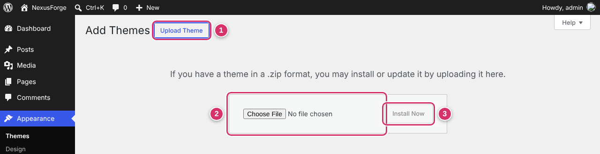
- Upload Theme — opens the upload form.
- Choose File — select the theme ZIP from your computer.
- Install Now — uploads and installs the theme.
Option B — upload by FTP / file manager
- Unzip the theme. You should have a single folder named
nexusforge. - Upload that folder to
/wp-content/themes/on your server. - Go to Appearance → Themes and activate NexusForge.

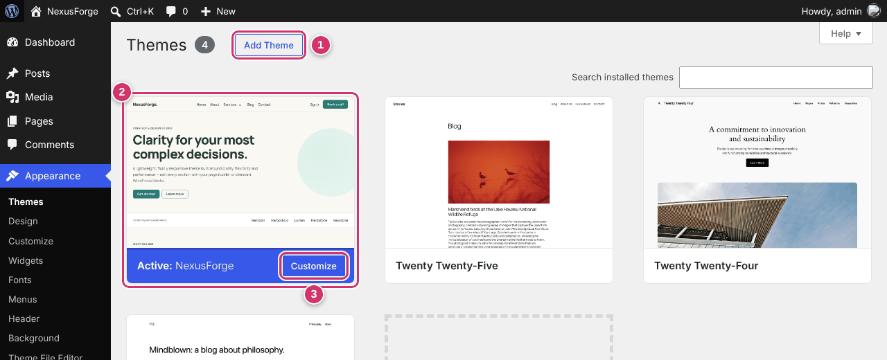
- Add Theme — start here to upload the ZIP.
- Active theme card — confirms NexusForge is active.
- Customize — opens the Customizer with live preview.
Install a newer ZIP the same way. WordPress asks whether to replace the installed version — choose Replace installed with uploaded. Your Customizer settings, menus and widgets are kept. If you have edited theme files directly, those edits are lost; use a child theme instead.
04Quick start
A fresh install looks complete straight away because the theme shows built-in starter sections on the homepage. These seven steps turn it into your site.
- Set your name and logo — Appearance → Customize → Site Identity. Details
- Create your pages — at least Home, About, Contact and Blog. Give the Contact page the slug
contactand the About page the slugabout; the theme’s built-in buttons link to those addresses. Why - Choose the homepage — Settings → Reading: set Home as the homepage and Blog as the posts page. Details
- Build the menus — Appearance → Menus: create a menu for the Primary Menu location and, optionally, one for Footer Menu. Details
- Pick your colours — Appearance → Customize → NexusForge — Design System. Details
- Fill the footer — Appearance → Widgets, Footer area. Details
- Write your homepage — edit the Home page with blocks, the theme’s patterns, or Elementor. As soon as the page has content, it replaces the starter sections. Details
05Theme anatomy
This is the homepage on a fresh install, showing the header, the seven starter sections and the footer. The starter sections appear only while your homepage has no content of its own (see Homepage setup).

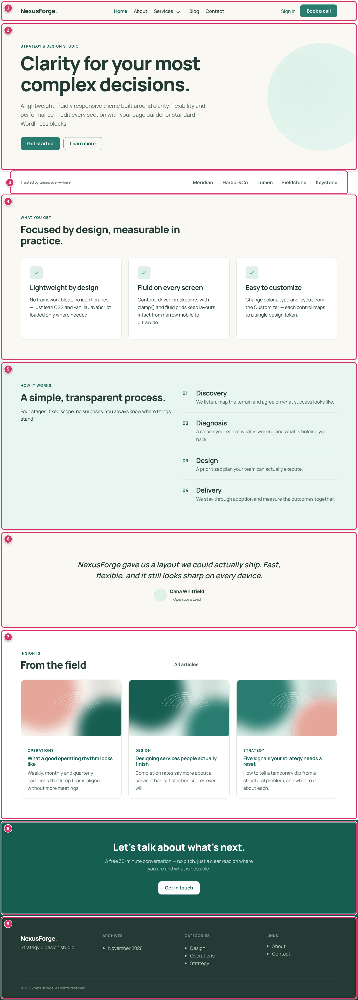
- Header — logo or site title, primary menu and two action links. Menus
- Hero — your tagline as the small label, a headline, intro text and two buttons (Get started →
/contact/, Learn more →/about/). - Trust strip — a row of placeholder client names.
- Feature cards — three benefit cards under “What you get”.
- Process — four numbered steps on a mint band.
- Testimonial — a single centred quote.
- Insights — your three latest posts. Shown only when at least one post is published.
- Call to action — deep-teal band with a Get in touch button (→
/contact/). - Footer — site name and tagline, the Footer widget area, the Footer menu and the copyright line. Footer
Templates included
| Page type | Template file | What it shows |
|---|---|---|
| Homepage | front-page.php | Your page content, the starter sections, or latest posts. |
| Blog (posts page) | home.php | Title banner and a grid of posts with pagination. |
| Single post | single.php | Meta, title, wide featured image, content, tags, previous/next links, comments. |
| Page | page.php | Title, optional featured image, content, comments if enabled. |
| Archives | archive.php | Category, tag, date and author archives as a post grid. |
| Search results | search.php | Heading, search form and a list of results. |
| Not found | 404.php | 404 message, a link home and a search form. |
| Fallback | index.php | Used when no more specific template applies. |
06Site identity & logo
Open Appearance → Customize. The Customizer lists every area the theme supports:

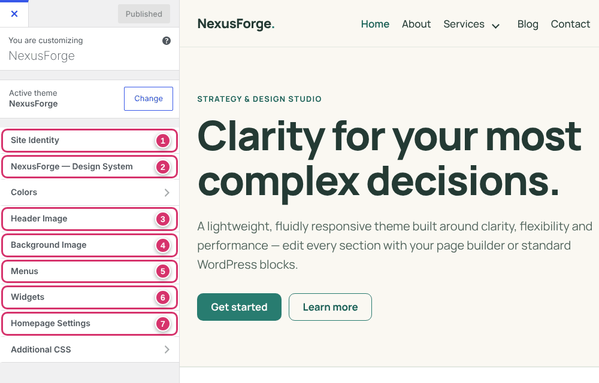
- Site Identity — logo, site title, tagline, site icon.
- NexusForge — Design System — the theme’s six design controls. Details
- Header Image — optional banner under the header. Details
- Background Image — optional page background image.
- Menus — create menus and assign locations with live preview.
- Widgets — edit the Footer widget area with live preview.
- Homepage Settings — choose a static homepage and a posts page.
Logo, title and tagline

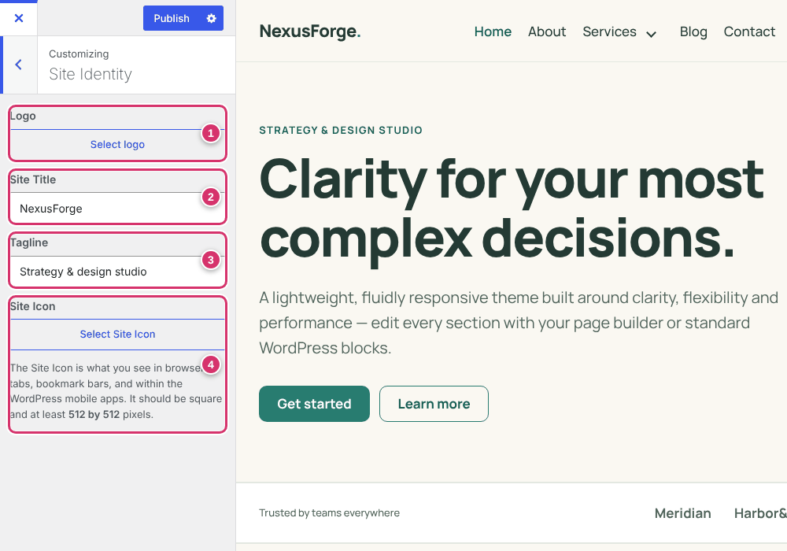
- Logo — replaces the text title in the header. Recommended size 360×96 px (shown at up to 48 px tall); any proportions are accepted.
- Site Title — shown in the header when no logo is set, and in the footer. A teal dot is added after it automatically.
- Tagline — shown under the site name in the footer and as the small label above the starter hero headline.
- Site Icon — the browser-tab icon (favicon). Use a square image of at least 512×512 px.
Tip. Upload a logo at twice its display size so it stays sharp on high-density screens. SVG logos need a plugin that enables SVG uploads; the theme displays them like any other image.


08Homepage setup
What the homepage shows depends on two things: the setting under Settings → Reading and whether your homepage has content.
| Reading setting | Homepage content | Result |
|---|---|---|
| A static page | The page is empty | The theme’s seven starter sections (Figure 3). |
| A static page | The page has blocks, classic content or an Elementor layout | Your content, full width, with the theme header and footer. |
| Your latest posts | — | A grid of your latest posts with pagination. |
Set a static homepage
- Create two pages under Pages → Add New: one called Home and one called Blog. Leave Blog empty.
- Go to Settings → Reading and choose A static page.
- Select Home as Homepage and Blog as Posts page, then Save Changes.

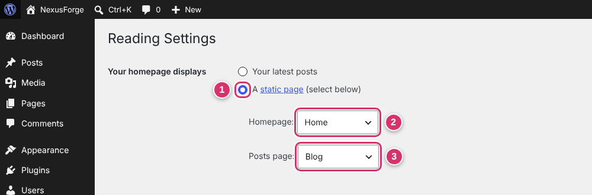
- A static page — switches from latest posts to a page.
- Homepage — the page used as your front page.
- Posts page — the page that lists your blog posts.
- Save Changes.
Replacing the starter sections with your own content
The starter sections are a placeholder so a new site never looks empty. Their wording is part of the theme and is not editable from the dashboard. To replace them, edit your Home page and add content:
- With blocks — insert the theme’s patterns (Hero, Feature columns, Call-to-action band) and adjust the text.
- With Elementor — click Edit with Elementor and design the page freely.
As soon as the page is saved with content, the starter sections disappear and your content is shown instead. Delete the content to bring them back.
How homepage content is laid out
The homepage is a full-width canvas, so each block decides how wide it is:
| Block alignment | Width on the homepage | Typical use |
|---|---|---|
| None (default) | Reading column, 720 px | Paragraphs, headings, lists |
| Wide width | Wide container, 1200 px (the Wide content width control) | Hero panels, columns, galleries |
| Full width | Edge to edge | Coloured bands, cover images |
Set the alignment from the block toolbar (the Align button). The same three alignments work on ordinary pages and posts, where wide and full-width blocks break out of the reading column. A full-width block placed first or last sits flush against the header or footer.
09Design System (Customizer)
Go to Appearance → Customize → NexusForge — Design System. Each control changes one global value, and the preview updates instantly without reloading.

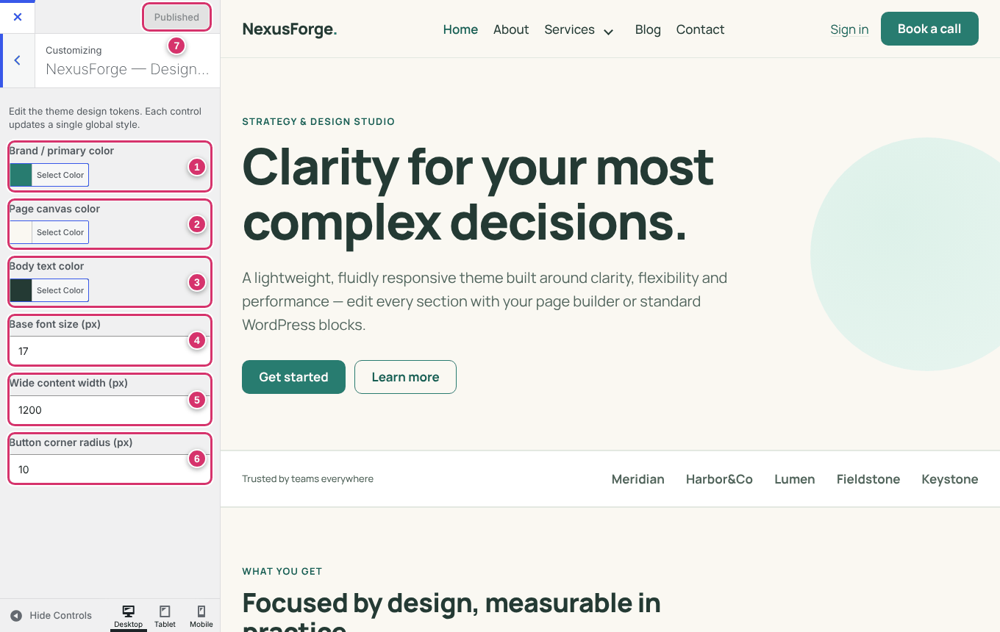
- Brand / primary color — buttons, the dot after the site title, accents.
- Page canvas color — the page background and form fields.
- Body text color — text, headings, the keyboard focus ring and the footer background.
- Base font size — body text size on large screens.
- Wide content width — the maximum width of the header, footer and wide sections.
- Button corner radius — roundness of buttons and form fields.
- Publish — saves your changes and makes them live.
Control reference
| Control | Default | Allowed values | CSS variable |
|---|---|---|---|
| Brand / primary color | #287C70 | Any hex colour | --nexusforge-color-brand |
| Page canvas color | #FAF8F2 | Any hex colour | --nexusforge-color-canvas |
| Body text color | #243A34 | Any hex colour | --nexusforge-color-text |
| Base font size | 17 px | 14 – 22 px | --nexusforge-fs-body |
| Wide content width | 1200 px | 960 – 1440 px, steps of 20 | --nexusforge-wide |
| Button corner radius | 10 px | 0 – 40 px | --nexusforge-radius-md |
Numbers outside the allowed range are brought back into range automatically, and anything that is not a valid colour or number is ignored.
Live preview example

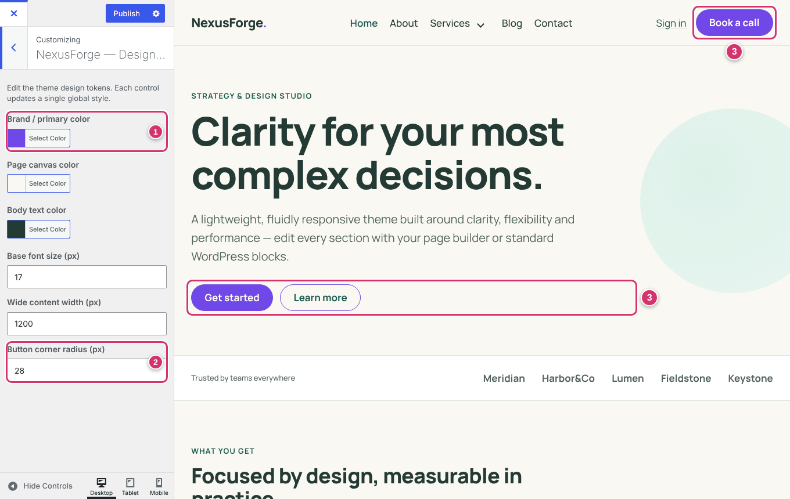
- Brand colour changed to violet.
- Corner radius raised to 28 px.
- Result — every button in the preview picks up both changes immediately.
The theme’s default colours meet WCAG AA contrast. If you change them, keep a strong contrast between the Body text and Page canvas colours (at least 4.5:1), and choose a Brand colour dark enough for white button text. Some supporting colours — deep teal links, mint bands and the dark footer — are fixed and do not follow these controls; see Design tokens to change them with CSS.
Editor note. The block editor always shows the theme’s default colours and sizes. Customizer changes apply to the front end of the site.
10Header image & background
Header image
Appearance → Customize → Header Image. When you add an image it appears as a full-width banner directly beneath the site header, on every page. Remove the image and the banner disappears.
- Recommended size: 1600×400 px. Other sizes are accepted and scale to the full width.
- The banner is a decorative image only; the site title and logo stay in the header above it.
Background image and colour
Appearance → Customize → Background Image lets you place an image behind the whole page, and Colors offers the standard WordPress Background Color control.
Which colour control should I use? Prefer Page canvas color in the Design System section: it also updates form fields and other parts that sit on the canvas. The WordPress Background Color control only changes the page background and, when set, takes priority over the canvas colour.
11Blog, posts & search
Blog and archive pages

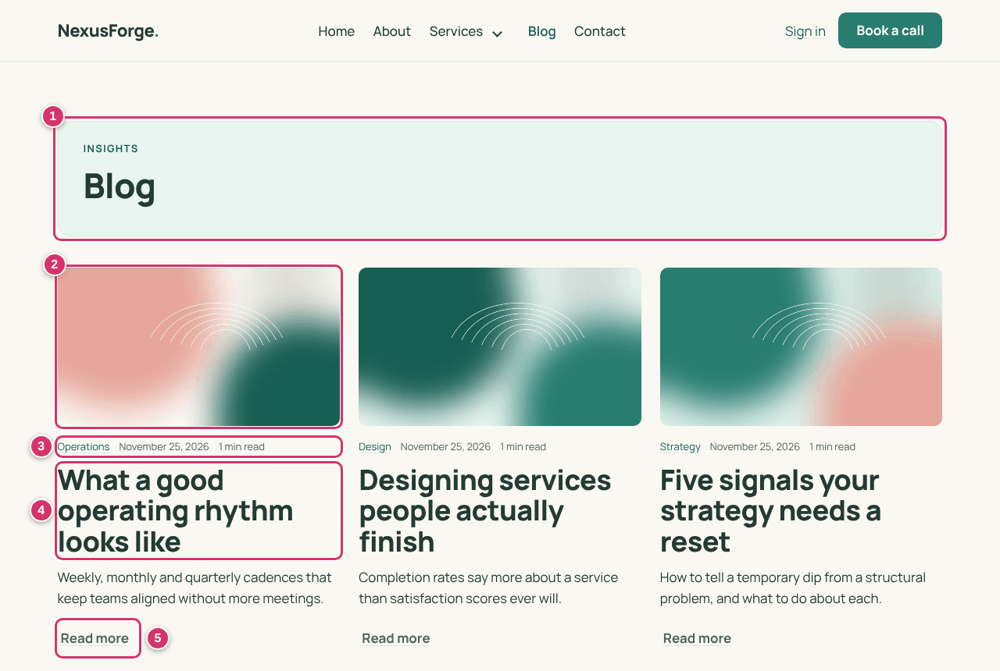
- Title banner — shows the title of your posts page. Archives show the archive name and description.
- Featured image — cropped to 16:9. Posts without one get a soft mint placeholder.
- Meta line — category, date and estimated reading time.
- Post title — links to the post.
- Read more — links to the post.
- The grid shows three columns at the default content width and reflows down to one column on phones.
- The text under each title is the post excerpt. Write one in the post sidebar for full control; otherwise WordPress uses the start of the post.
- The number of posts per page is set under Settings → Reading.
- Reading time is estimated at 200 words per minute.
Single post

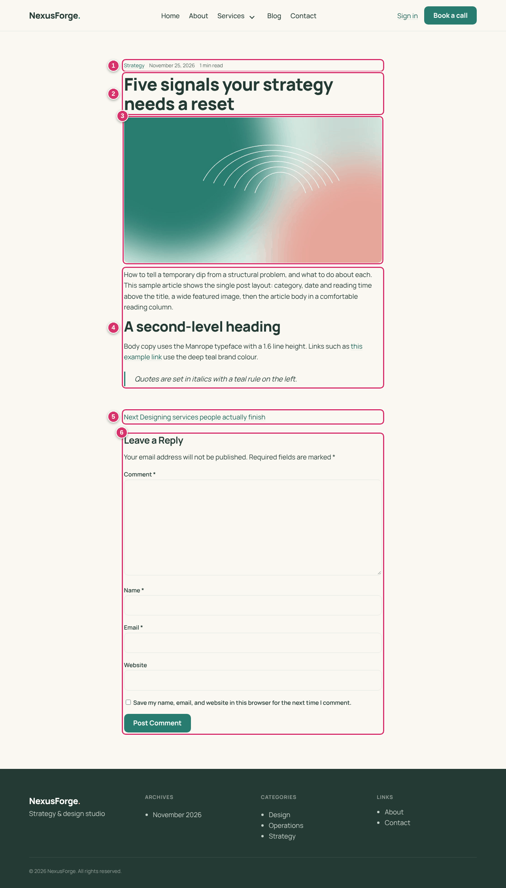
- Meta line — category, date, reading time.
- Title.
- Featured image — shown across the reading column at 16:9.
- Content — a comfortable reading column. Tags appear under the content.
- Post navigation — links to the previous and next post.
- Comments — the comment list and form, when comments are open. Replies are threaded.
To add a featured image, open the post, find Featured image in the right-hand sidebar and choose an image. For sharp results upload images at least 1280 px wide. Turn comments on or off per post in the Discussion panel, or site-wide under Settings → Discussion.
Search results and the 404 page

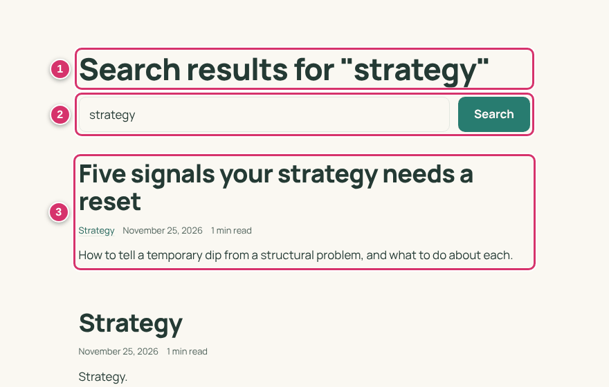
- Heading — repeats the search term.
- Search form — search again.
- Result — title, meta line and excerpt.

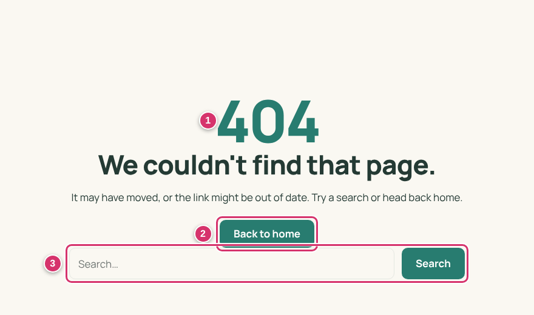
- 404 message.
- Back to home.
- Search form.
The theme does not place a search field in the header. To offer search site-wide, add the Search block to the Footer widget area.


13Block editor: styles & patterns
The editor canvas uses the theme’s font, colours and spacing, so what you build looks the same on the site. The colour picker offers the theme palette, and the typography and spacing controls offer the theme’s presets.
Block styles
Select a block, open the Block tab in the right-hand sidebar and look for Styles.

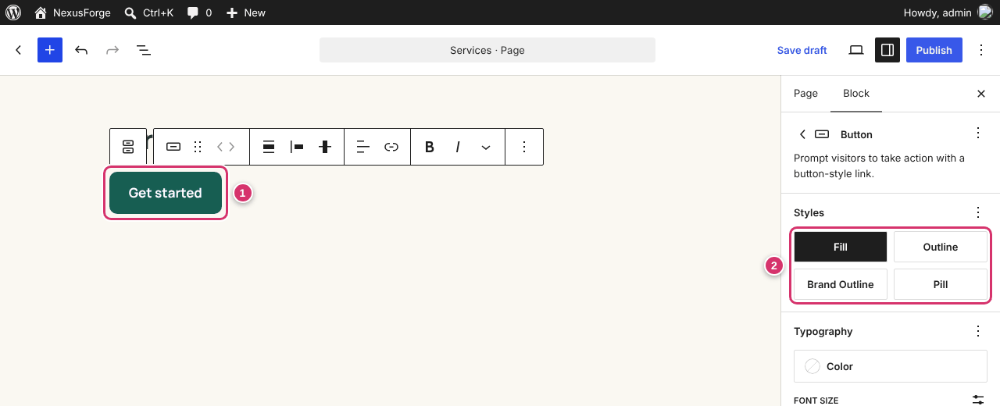
- Selected block — here a Button.
- Styles — Brand Outline and Pill are added by the theme; Fill and Outline come from WordPress.

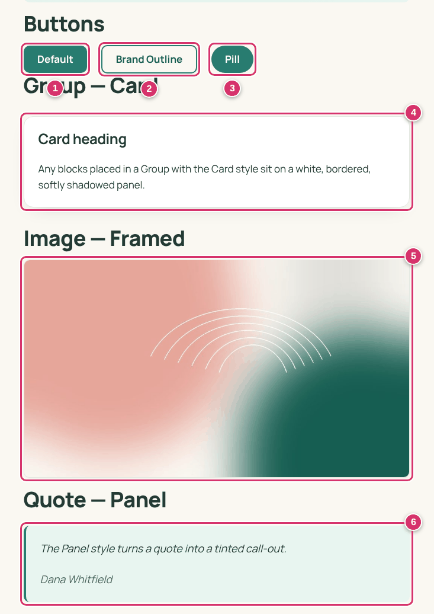
- Button — default.
- Button — Brand Outline — transparent with a brand-colour border; fills on hover and focus.
- Button — Pill — fully rounded ends.
- Group — Card — white panel with border, rounded corners and a soft shadow.
- Image — Framed — thin border and rounded corners.
- Quote — Panel — tinted call-out with a brand-colour rule.
Starter patterns
Patterns are ready-made groups of blocks. Open the block inserter, choose the Patterns tab and then the NexusForge category. Click a pattern to insert it, then edit the text.

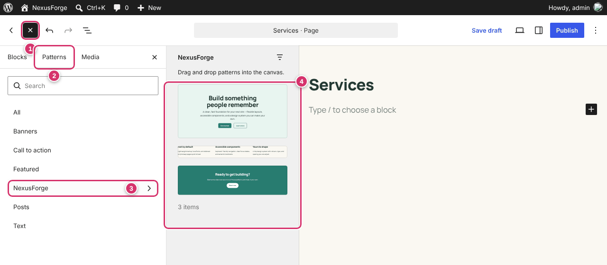
- Block inserter — the + button in the top toolbar (shown here as × while open).
- Patterns tab.
- NexusForge category.
- The three patterns — click one to insert it.

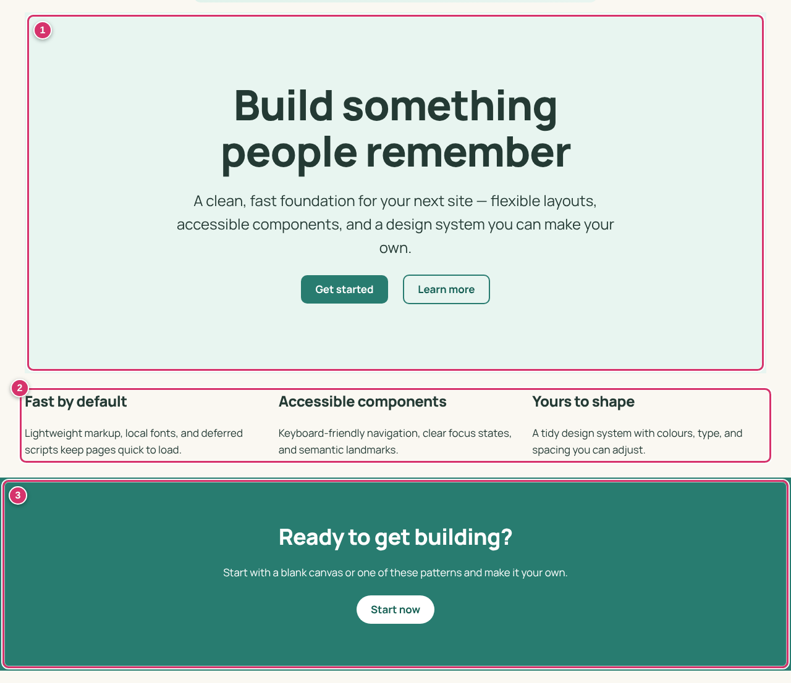
- Hero with call to action — headline, text and two buttons on a pale mint panel.
- Three feature columns — three headings with supporting text.
- Call to action band — full-width brand-colour band with a white pill button.
Editor presets
| Colour | Value | Colour | Value |
|---|---|---|---|
| Brand Teal | #287C70 | Deep Teal | #175E52 |
| Soft Mint | #DDF1E9 | Pale Mint | #E8F5F0 |
| Warm Ivory | #FAF8F2 | White Surface | #FFFFFF |
| Forest Charcoal | #243A34 | Secondary Text | #50645B |
| Muted Border | #E3E8E1 | Muted Coral | #E7A69A |
- Font sizes: Small, Body, Large, X-Large and Display. All but Small scale with the screen width.
- Spacing: six steps from 2XS to XL.
- Widths: content 720 px, wide 1200 px. Blocks can be aligned Wide or Full width.
14Elementor compatibility
NexusForge works without any page builder. If you install Elementor, the theme steps aside where Elementor takes over and keeps providing the header, footer, fonts and colours everywhere else.
| Elementor page layout | Theme header & footer | Use it for |
|---|---|---|
| Default | Shown | Regular pages inside the theme’s content width. |
| Elementor Full Width | Shown | Edge-to-edge page designs that keep the site navigation. |
| Elementor Canvas | Hidden | Landing pages with no theme chrome at all. |
Set the layout in Elementor under Settings (gear icon) → Page Layout.
- Homepage: a static homepage built with Elementor replaces the starter sections automatically.
- Elementor Pro Theme Builder: the theme registers the standard header, footer, single and archive locations. When you publish a Theme Builder header or footer, it is used instead of the theme’s own.
Tested scope. The Full Width and Canvas layouts were verified with Elementor (free) in version 1.0.2 of the theme. The Elementor Pro Theme Builder integration is implemented but has not been tested on a licensed Pro installation.
15Accessibility
The theme is built to be usable with a keyboard and assistive technology. It targets WCAG 2.2 level AA but makes no formal conformance claim; what you add to the site (colours, images, content) also matters.

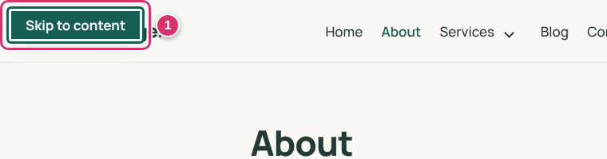
- Skip to content — appears on the first press of Tab and jumps past the header. It sits below the admin bar when you are logged in.

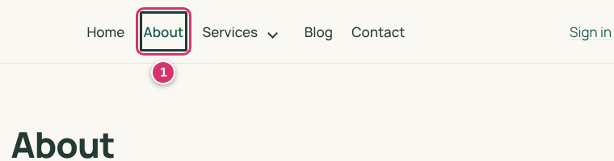
- Focus ring — a 3 px outline on every link, button and form field reached by keyboard; white on dark areas such as the footer.
Keyboard reference
| Where | Key | What happens |
|---|---|---|
| Anywhere | Tab / Shift+Tab | Move to the next / previous link, button or field. |
| Skip link | Enter | Jump to the main content. |
| Menu item with sub-items | Tab onto it | Its dropdown opens; keep pressing Tab to move through the sub-items. |
| Submenu button | Enter or Space | Open or close the dropdown. |
| Inside a dropdown | Esc | Close it and return focus to its submenu button. |
| Menu button (small screens) | Enter or Space | Open the mobile menu; focus moves to the Close button. |
| Mobile menu open | Tab / Shift+Tab | Cycle through the menu only; focus cannot leave it. |
| Mobile menu open | Esc | Close the menu and return focus to the menu button. |
Also built in
- Landmarks for the header, navigation, main content and footer, and a level-one heading on every built-in template.
- The current page is announced in the menu (
aria-current), and submenu and menu buttons report whether they are expanded. - Labelled search and comment forms; primary buttons and form fields are at least 44 px tall.
- Animations are switched off for visitors who ask their device to reduce motion.
- Decorative images and placeholders are hidden from screen readers.
Your part. Add alternative text to images, keep heading levels in order, write descriptive link text, and check contrast after changing colours in the Customizer. When you build your own homepage, start it with one level-one heading (the Hero pattern includes one).
16Translation
Every piece of text in the theme can be translated. The text domain is nexusforge and the template file is languages/nexusforge.pot.
- Open
languages/nexusforge.potin a translation editor such as Poedit, or use a translation plugin such as Loco Translate. - Translate the strings and save the result as
nexusforge-{locale}.poand.mo— for examplenexusforge-de_DE.mofor German ornexusforge-bn_BD.mofor Bengali. - Place the files in
wp-content/languages/themes/(they survive theme updates there). - Set the site language under Settings → General → Site Language.
Rewording built-in text. On a site that uses any language other than English (United States), a translation file is also a simple way to reword built-in text such as “Book a call” or the starter sections. WordPress does not load translation files for English (United States); on those sites change the wording in a child theme.
17Developer reference
File structure
Design tokens
All colours, sizes and spacing come from CSS custom properties declared on :root in assets/css/tokens.css. Override any of them from a child theme or Customize → Additional CSS.
| Token | Default | Used for |
|---|---|---|
--nexusforge-color-brand | #287C70 | Primary buttons, accents (Customizer) |
--nexusforge-color-brand-2 | #175E52 | Links, hover states, small labels, call-to-action band |
--nexusforge-color-canvas | #FAF8F2 | Page background (Customizer) |
--nexusforge-color-surface | #FFFFFF | Cards, dropdowns, mobile menu |
--nexusforge-color-text | #243A34 | Text, headings, focus ring (Customizer) |
--nexusforge-color-text-2 | #50645B | Secondary text and meta |
--nexusforge-color-border | #E3E8E1 | Borders and dividers |
--nexusforge-mint / -mint-pale | #DDF1E9 / #E8F5F0 | Tinted bands, tags, hover backgrounds |
--nexusforge-ink | #243A34 | Footer background (follows the text colour control) |
--nexusforge-fs-body | 16 – 17 px, fluid | Body text size (Customizer) |
--nexusforge-fs-h1 … -h3, -display | Fluid clamp() values | Heading sizes |
--nexusforge-content / --nexusforge-wide | 720 px / 1200 px | Reading column / wide container (wide: Customizer) |
--nexusforge-radius-sm / -md / -lg | 6 / 10 / 16 px | Corner radii (md: Customizer) |
--nexusforge-space-1 … -10 | 0.25 – 4 rem | Spacing scale |
--nexusforge-focus-ring | 3 px solid text colour | Keyboard focus outline |
Example — a darker footer and squarer cards, added under Customize → Additional CSS:
:root {
--nexusforge-radius-lg: 8px;
}
.nexusforge-footer {
background: #14211d;
}Breakpoints
| Width | Change |
|---|---|
| ≤ 900 px | Primary menu becomes the slide-in mobile menu; the menu button appears. |
| ≤ 600 px | Header action links are hidden; hero buttons become full width; the decorative hero circle is hidden. |
Grids use auto-fit columns, so cards reflow on their own without further breakpoints.
Theme features registered
| Feature | Details |
|---|---|
| Menus | primary (Primary Menu), footer (Footer Menu) |
| Widget area | footer-1 (Footer) |
| Image sizes | nexusforge-card 720×405 (cropped), nexusforge-wide 1280×640 (cropped) |
| Custom logo | 180×48 suggested, flexible width and height |
| Custom header | 1600×400 suggested, flexible; no header text, no video |
| Also supported | Custom background, post thumbnails, title tag, HTML5 markup, responsive embeds, wide alignment, editor styles, automatic feed links, selective refresh for widgets |
| Body classes | nexusforge always; hfeed on list views; no-footer-widgets when the Footer area is empty |
After activating the theme on a site that already has images, regenerate thumbnails (for example with the Regenerate Thumbnails plugin or wp media regenerate) so existing images get the two theme sizes.
Hooks and pluggable functions
| Name | Type | Purpose |
|---|---|---|
nexusforge_content_width | Filter | The global $content_width in pixels (default 1200), used by WordPress for embeds and image sizing. |
nexusforge_posted_on() | Pluggable | Prints the post date. |
nexusforge_posted_by() | Pluggable | Prints the author link. |
nexusforge_reading_time() | Pluggable | Returns the estimated reading time in minutes. |
nexusforge_entry_meta() | Pluggable | Prints the category, date and reading-time line. |
nexusforge_post_thumbnail() | Pluggable | Prints the featured image or the placeholder. |
nexusforge_pagination() | Pluggable | Prints numbered pagination. |
“Pluggable” functions are wrapped in function_exists(): define a function with the same name in a child theme and yours is used instead. The standard WordPress hooks (wp_head, wp_body_open, wp_footer, body_class, wp_nav_menu_* and so on) are all available.
Using a child theme
Make code changes in a child theme so they survive updates. Create a folder wp-content/themes/nexusforge-child/ with these two files:
/* style.css */
/*
Theme Name: NexusForge Child
Template: nexusforge
Version: 1.0.0
*/
:root {
--nexusforge-color-brand-2: #0f4c5c; /* links and hover states */
}<?php
// functions.php
add_action(
'wp_enqueue_scripts',
function () {
wp_enqueue_style(
'nexusforge-child',
get_stylesheet_uri(),
array( 'nexusforge-main' ),
wp_get_theme()->get( 'Version' )
);
},
20
);Activate the child theme under Appearance → Themes. Then:
- Change a template — copy the file from the parent theme into the same path in the child theme and edit the copy. For example, copy
template-parts/header/navigation.phpto change or remove the Sign in and Book a call links, ortemplate-parts/front/hero.phpto rewrite the starter hero. - Change the styling — add rules or token overrides to the child
style.css.
Order matters. The child stylesheet loads after the Customizer’s values. If you override a token that a Customizer control also sets (brand, canvas, text, body size, wide width, medium radius), your CSS wins and that control appears to do nothing.
Styles and scripts loaded on the front end
| Handle | File | Notes |
|---|---|---|
nexusforge-fonts | assets/css/fonts.css | Local Manrope @font-face |
nexusforge-tokens | assets/css/tokens.css | Customizer values are added inline after this file |
nexusforge-main | assets/css/main.css | Layout and components |
nexusforge-blocks | assets/css/blocks.css | Block styles and header banner |
nexusforge-navigation | assets/js/navigation.js | Footer, deferred, no dependencies |
18Troubleshooting & FAQ
My menu does not appear in the header.
The menu has not been assigned to a location. Go to Appearance → Menus, open your menu, tick Primary Menu under Menu Settings and save. Until then the header lists your top-level pages.
The homepage shows text I did not write.
Those are the starter sections, shown while your static homepage is empty. Add your own content to the page and they are replaced. See Homepage setup.
“Book a call” or “Get started” leads to a not-found page.
These built-in buttons link to /contact/ (and Learn more to /about/). Create pages with the slugs contact and about, and make sure Settings → Permalinks is set to anything other than Plain.
I changed a colour in the Customizer but the site looks the same.
Click Publish in the Customizer, then clear any page cache or CDN cache and reload. If you use a child theme or Additional CSS that sets the same token, that CSS takes priority.
The mobile menu button does nothing.
The menu needs the theme’s navigation.js. Optimisation plugins that combine, delay or remove JavaScript can stop it loading; exclude navigation.js from those features. Also check the browser console for errors from other plugins.
My logo looks too small or too large.
The header shows the logo at up to 48 px tall. For a different height add this under Customize → Additional CSS, changing the number as needed:
.nexusforge-branding img { max-height: 64px; }Featured images look blurry or oddly cropped.
Upload images at least 1280 px wide. Featured images are displayed at 16:9 and cropped from the centre, so keep the subject away from the edges. Images uploaded before the theme was activated need their thumbnails regenerated.
How do I remove “Sign in” from the header?
Use a child theme and copy template-parts/header/navigation.php into it, then delete the link. For a quick fix without code files, hide it with Additional CSS:
.nexusforge-signin { display: none; }Can I use a different font?
Yes. Load your font (for example with a font plugin or from a child theme) and set the token:
:root { --nexusforge-font: "Your Font", sans-serif; }Does the theme need Elementor?
No. Every page works with Elementor absent or deactivated.
Does the theme collect data or load anything from other servers?
No. Fonts, styles and scripts are all served from your own site.
19Changelog, licence & credits
Changelog
The full history is in readme.txt in the theme folder. Highlights of version 1.0.4:
- Mobile menu rebuilt as a focus-trapped dialog with a Close button and a neutral overlay.
- Skip link no longer overlaps the WordPress admin bar.
- Visible focus indicators on every interactive element; dropdowns keyboard-operable to three levels.
- Customizer values validated again when the stylesheet is generated.
- Homepages built with blocks now use the full width, and Wide alignment works on pages and posts.
- Block editor canvas now uses the theme’s font and colours; this documentation added.
Licence
NexusForge is distributed under the GNU General Public License, version 2 or later. You may use it on any number of sites, modify it and redistribute it under the same licence. This documentation and its screenshots are part of the theme and carry the same licence.
Bundled resources
| Resource | Licence | Location |
|---|---|---|
| Manrope typeface, © 2019 The Manrope Project Authors | SIL Open Font License 1.1 | assets/fonts/ (licence text included) |
| Lucide-style inline SVG icons | ISC | Inline in the starter sections |
Support
For help, use the theme’s support forum on WordPress.org. When reporting a problem please include your WordPress and PHP versions, the theme version (shown under Appearance → Themes → Theme Details), a list of active plugins, and the steps that lead to the problem.